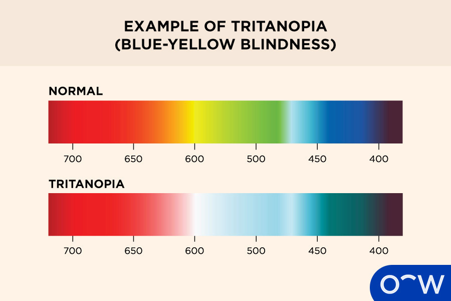
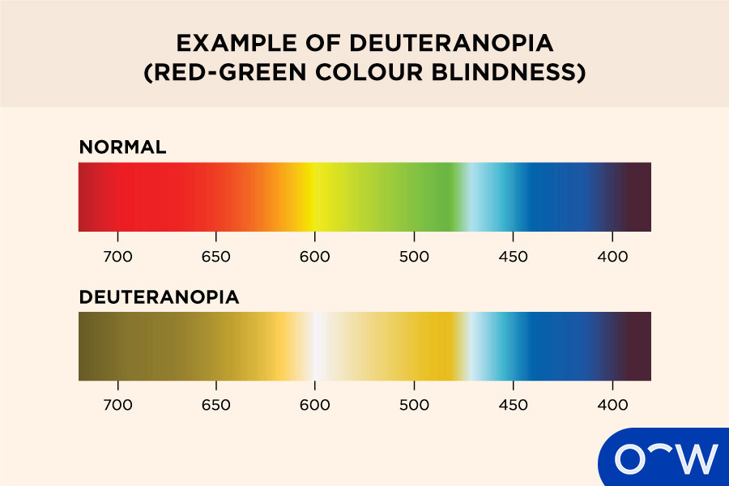

A Comprehensive Guide to Different Types of Colour Blindness
Content
Monochromatism (complete colour blindness):
Monochromatism also known as complete colour blindness occurs when you
cannot see any colour at all.
Anomalous Trichromacy (Blue-Yellow Colour Blindness):
Anomalous Trichromacy is a type of colour blindness that can impact
how blue colours and yellow colours are seen.
Deuteranomaly (red-green colour blindness):
Deuteranomaly is a common type of colour blindness that can affect how
the eyes see green colours and red colours.
Tritanopia:
Tritanopia is a type of blue-yellow colour blindness that hinders the
eyes from differentiating between blue, green, red, pink, purple and
yellow.
Tritanomaly:
Tritanomaly is another type of blue-yellow colour blindness that
causes difficulty for the eyes to distinguish between blue and green
and yellow and red.
1. Tritanopia
Content

Content
2. Tritanomaly
Content
Deuteranomaly (Red-Green Colour Blindness)
Content
Protanomaly:
Protanomaly is a mild form of red-green colour blindness that can make
the appearance of red colours look more green and darkened.
Deuteranomaly:
Deuteranomaly is the most common type of red-green colour blindness
that results in green colours appearing red.
Protanopia:
Protanopia can occur as a result of absent L cones and can cause the
inability of the eyes to see red colours.
Deuteranopia:
Deuteranopia can develop due to missing M cones and can hinder the
eyes from seeing green colours.
1. Protanomaly
Content
2. Deuteranomaly
Content

3. Protanopia
Content
4. Deuteranopia
Content
What is Colour Blindness?
Content
How Does Colour Blindness Work?
Content
How Common is Colour Blindness?
Content
How Does Colour Blindness Affect a Person's Life?
Content
Is Colour Blindness a Disability?
Content
Can a Person Be Slightly Colour Blind?
Content
Can a Colour Blind Person Have Perfect Vision?
Content
How to Know What Type of Colour Blindness You Have?
Content
Experiencing Difficulty Differentiating Between Reds and
Greens:
If you’re experiencing trouble differentiating between red colours and
green colours completely, this may indicate you have protanopia and
deuteranopia (red-green colour blindness).
Seeing Green Colours Appear More Red:
If you are seeing green colours appear more red, this may be a sign
you have deuteranomaly (red-green colour blindness)
Certain Shades of Red Look More Green:
If you see green in red colours and in a less bright nature, you may
be experiencing protanomaly.
Incapable of Distinguishing Between Blues and Greens and Yellows
and Reds:
If you are struggling to discern between blue colours and green
colours and between yellow colours and red colours, this could
indicate tritanomaly (blue-yellow colour blindness).
Affected Perception of Blue Colours:
If you cannot differentiate between reds, pinks, purples and greens,
you may be experiencing tritanopia. This type of blue-yellow colour
blindness affects your perception of colours that contain attributes
of either blue or yellow.
Unable to See All Colours:
If you are unable to see any colour, you most likely have
monochromatism (complete colour blindness).
What Kind of Eye Doctor Diagnoses Colour Blindness?